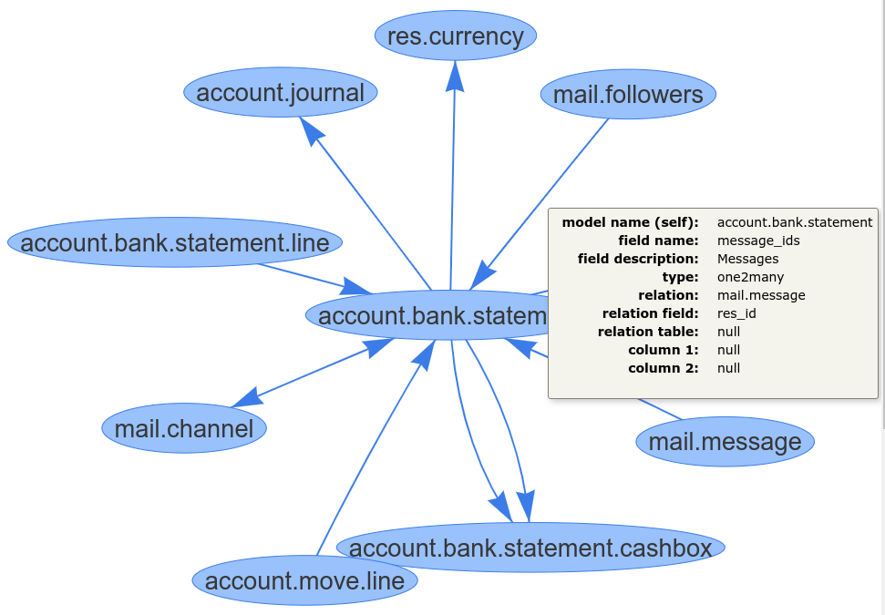

Modules Dependencies
Odoo Module Parents: Given an Odoo module it shows every module in which the module depends on. These are the modules that need to be installed before it.
Odoo Module Children: Given an Odoo module it shows every module that depends of it directly or indirectly.
A module can have redundant dependencies. The option Acyclic graph shows or hides these redundant dependencies.

Models Relationship
Given some models it shows the relationship graph with other models.
Some models, for example res.users, have relations with all models. The option Ignore exclude some models from the graph.
The option Depth specifies how deep the graph is going to be. A lower value is recommended.
JS Objects Inheritance
JavaScript Parents: Given some JavaScript constructor functions, the graph shows the functions (parents) which the given functions extend.
JavaScript Children: Given some JavaScript constructor functions, the graph shows the functions (children) that extend the given functions.